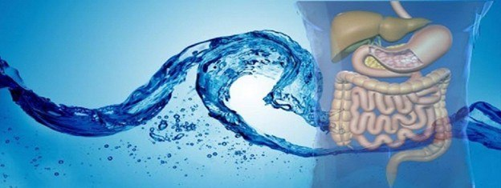
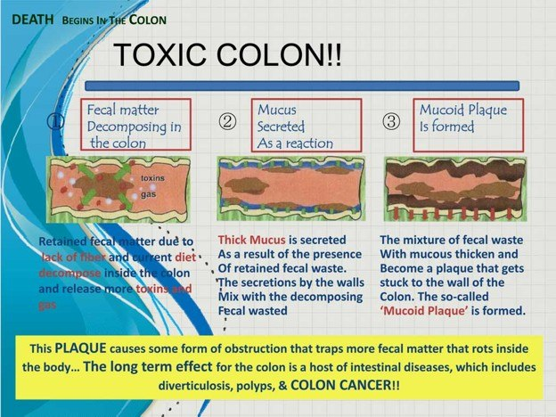
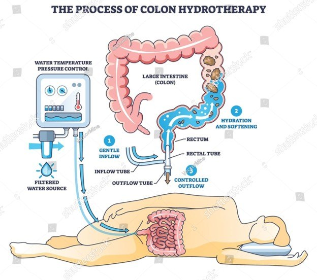

Colon Hydrotherapy
Everyone can benefit from colon hydrotherapy. You might have heard it called colonic irrigation, colonic, high colonic, or colon lavage. Its origin dates back as far as 1500 BC in Egypt. Colon hydrotherapy has been one of the techniques used to maintain health by chiropractors and naturopaths during this century.
Colon hydrotherapy is the cleansing of the colon by gentle water pressure to wash out or detoxify the large intestine of stagnated fecal material. In a colon hydrotherapy session, the water is infused via a tube inserted in the anus and the dislodged waste material leaves via the waste tube.
This is done in a professional, private therapy room with just you and the therapist. You remain beneath a cover throughout the session to help maintain your dignity. During the process, reflexology, and acupressure, abdominal palpation may be used to aid in relaxation and release.
Your therapist will make you feel comfortable and at ease. The session starts by lying on your left side then moving to your back. It is recommended that your first session be immediately followed by a second session the next day. A cleansing schedule that is right for you will be discussed after your first session.


Benefit
What is the purpose of having a colonic? Waste material, especially that which has remained in the colon for some time, (i.e. impacted feces, dead cellular tissue, accumulated mucus, parasites, worms, etc.) poses several problems. First, this material is quite toxic (poisonous). These poisons can re-enter and circulate in the blood stream making you feel ill, tired, or weak. Second, impacted materials impair the colon's ability to assimilate minerals and bacteria-produced vitamins. Finally, a buildup of material on the colon wall can inhibit muscular action causing sluggish bowel movements and constipation.
What will colon hydrotherapy do for the colon?
The following can be accomplished:
- Cleanse the colon: Toxic material is broken down so it can no longer harm your body or inhibit assimilation and elimination. Even debris built up over a long period of time is gently, but surely removed, by the process of a series of sessions. Once impacted material is removed, your colon can begin to operate as it was intended to. In a sense, a colonic is a rejuvenation treatment.
- Exercise the Colon Muscles: The buildup of toxic debris weakens the colon and impairs it functioning. This gentle filling and emptying of the colon improve peristaltic (muscular contractions) activity by which the colon naturally moves material.
- Reshape the Colon: When problem conditions exist in the colon, they tend to alter its shape which in turn causes more problems. The gentle action of the water, coupled with the massage techniques helps to eliminate bulging pockets of waste and narrowed, spastic constrictions finally enabling the colon to resume its natural state.
- Stimulate the Reflex Points: Every system and organ of the body is connected to the colon by corresponding points. A colonic stimulates these points, thereby affecting the corresponding body parts in a beneficial way.



The Procedure
First, water is filtered and warmed to body temperature. The speculum or nozzle is inserted gently into the rectum to allow the warm water to enter slowly into the colon. As the water fills the colon, you will start to feel as if you are going to have a bowel movement. When this feeling becomes strong, that is the indication that the water cannot go any further into the colon. The water and waste are processed out of the colon through normal peristalsis (wave-like action). This happens with no effort or straining on your part. Palpation on your abdomen may be used throughout the procedure to keep you relaxed and aid in the removal process. This process of water in, water out is repeated throughout the session with the water traveling further up the colon each time. The goal is to get water throughout the entire 5 to 6 feet of the colon. Generally, this is not accomplished during your very first session. Relaxation and your ability to let go determine how much of the colon we can reach. We suggest that you follow your first session with a second one the following day. This way you can take advantage of the day before cleaning and you will be more familiar with the procedure and be able to fully relax. Once we get to know you, we can create a flexible cleaning schedule that is perfect for your body.
The Process:
We use FDA registered Closed System. While using this system, there is no smell or sound (gas releasing from the body). You can see matter (stool, gas, mucus, etc.) leave the body through a viewing tube.
You are completely covered during the entire procedure, resting comfortably on the table. Your therapist stays with you in the room during the entire session as it is very important to us that you are comfortable and stays in constant communication.
This is your time and what is discussed stays within our four walls as we know this is very personal and private. As our body is connected to our emotions, many clients understand that this can be a very emotional experience.
The procedures administered by staff members are non-medical procedures. They are not intended to be a corrective measure for human ailments, symptoms, or conditions of any kind. Only your licensed physician can provide medical treatments. This practice does not engage in diagnosis, prescription, or treatment of physical or mental human ailments or conditions of any kind. Any medical complaints or requests for diagnosis, prescription or treatment of human ailments should be referred to your licensed physician.
How to Prepare
Preparation/Before your 1st Session (preferable 3 days prior to your first session)
Make your appointment, please arrive at least fifteen (15) min early to settle in before you meet your practitioner/therapist. A thorough new client intake form will be completed. We will spend some time educating you about Colon hydrotherapy, reviewing your health history, answering questions, going over what you should expect, how you should prepare before your session, what to expect after your session and making sure that you feel very comfortable about our protocol before your session.
Our SUGGESTIONS
Drinking as much water as you can comfortably is important – do NOT overcompensate by guzzling a gallon of water the day of your session. Eat healthy and nourishing foods the day of your session unless you are fasting or on a specific Detox Program. Eating a meal two to four hours before your colonic is ideal, but no food or beverage should be consumed in the two hours before your appointment. You are in the process of taking very good care of yourself so allow for the time and space you need to be in a calm state of mind. Your body responds best to treatment when it is relaxed.
A day or two before your appointment drinking 16 to 32 ounces of raw vegetable juice daily is helpful. Raw veggie juice goes to work to help scrub your cells squeaky clean like soap does for us externally. A colonic rinses the released toxins out of the body and away from our internal lining. Drinking the raw veggie juice prior to your colonic helps loosen wastes in the body and starts the cleansing process in advance.
Try to avoid dairy products, red meats, shellfish, processed carbohydrates (white rice, pasta, etc.), fried foods, sugar, carbonated beverages, i.e. soft drinks, or Beer, for as long as you can leading up to your appointment.
Include lots of the following in your diet:
- Raw fruits, lightly steamed, low starch vegetables
- Organic raw nuts, and seeds
- Plenty of omega 3, 6, 9, coconut oils, avocados and cold pressed plant oils like olive and sesame oil
- Whole grains – NOT whole wheat
- Organic chicken, and fresh water clean fish
TIP: A great cleansing formula: One head romaine lettuce or equal to that amount in celery, 5-6 stalks kale, 1-2 apples, 1 whole lemon, 1-2 tablespoons fresh ginger (go all organic if you can).
After Your Session: We ask that you eat very light, pure, and easy to digest foods the remainder of the day, no nuts, nothing spicy and ONLY steamed veggies for the day of your session. Try to stay away from raw, overly rich, heavy foods. You have just cleansed your system so well, we want you to allow your body to rest and relax so it can go to work to heal you, rather than to work digesting huge, rich meals. We suggest fresh veggie juice, steamed vegetables, a non-cream-based soup, light fish, and soft whole grains. Please try to stay away from alcohol it may cause a stomach ache because it is just too strong for your freshly cleansed system.
It is just fine to carry on with your normal daily plans or to return to work, LISTEN TO YOUR BODY, you will feel fine.
How Many Sessions Are Recommended?
Well, if you have ever eaten junk food, fatty food, sweets, caffeine, soda pop, chemically treated and preserved foods, processed food, too much food, too little food, or, in fact, anything that modern culture deems edible, then the colon becomes the repository of accumulated plaque and numerous, unhealthy toxins, which may disable the body's purification system. When waste material has accumulated over a long period of time it breaks down and becomes toxic. The body responds by slowing down other functions. This causes constipation and sluggish bowel movements which affects all other systems of the body.
To achieve the ultimate result, as recommended by many medical doctors, one or even two sessions will not be sufficient to cleanse a long-time buildup of toxin. It is recommended and necessary to do a series of twelve over ten weeks. Two the first week, (back-to-back) two the second week and one a week for the next eight weeks. The reason for that is that when we clean out the colon, the body starts pulling waste out of the tissue and putting them into the blood stream. The waste heads for the liver, then back to the colon. Therefore, the second session on the second day is necessary so that the digested waste is eliminated rather than reabsorbed. The same reason applies to the following two the second week. After the first four, then it is recommended one a week for eight weeks. This slows detoxification to a gentler more tolerable rate.
Each person is different, after your initial 2 session, we will discuss what will be best for you!!!
Listen to one of our clients sharing her experience with a series of sessions
Coffee Enema
The very last part of the colon, before reaching the rectum, is in an "S" shape and called the sigmoid colon. By the time stool gets to this part of the colon, most nutrients have been absorbed back into the bloodstream. Because the stool contains products of putrefaction at this point, there exists a special circulatory system between the sigmoid colon and the liver. There is a direct communication of veins called the enterohepatic circulation. Have you ever felt sick just before having a bowel movement, when stool material has just moved into the rectum for elimination? As soon as the material is evacuated, you no longer feel sick. This is due of the toxic quality of the material and the enterohepatic circulation coming into play. Because of this, it is important to evacuate when you have the urge. The rectum should usually be empty.
With a coffee enema, this is for specifically cleansing the liver. The liver is a major detoxification organ in that it processes and neutralizes all toxic chemicals, whether they come from our own body or the environment.
In essence, the coffee enema stimulates the flow of bile and increases the enzymatic action of the liver. Bile is formed by the liver – it is then stored in the gallbladder. Bile is then secreted into the intestines via bile ducts, carrying waste for transit from the body. Coffee enemas stimulate the opening of these bile ducts.
Caffeine and palmitates (chemicals in coffee) work synergistically to stimulate and cleanse the liver and blood. Without entering the digestive tract, the caffeine is absorbed through the bowel wall, via blood vessels, and makes its way directly to the liver.
The caffeine exposure causes the liver's portal veins and the bile ducts to expand which increases the release of diluted toxic bile. The enema fluid triggers peristalsis (intestinal muscle contractions) and the efficient removal of wastes from the body.
Palmitates in the coffee stimulate and increase the production of a liver enzyme called glutathione-S-transferase (GST), which removes free radicals and toxic cells from the bloodstream and facilitates detoxification of the liver. As a result of the enema the liver becomes less congested with debris, which makes room for the filtering process of yet more bodily toxins. Palmitates in coffee increase the production of GST by 700 times. These powerful free-radical-quenching enzymes assist your liver to more effectively detoxify your entire body.
Additionally, coffee contains the alkaloid theophylline, which dilates blood vessels, increasing blood dialysis across the colon wall.
Ideally, the coffee enema should be retained for twelve to fifteen minutes during which time the body's blood supply circulates and passes through the liver approximately five times (every three minutes). Since the blood serum is detoxified as it flows through the caffeinated liver, the enema is essentially a form of blood dialysis (filtering) across the colon wall. Drinking coffee has no such therapeutic benefits, but when you take it rectally the caffeine stimulates certain nerves that immediately cause the liver to release its toxins.
Great reasons to try coffee enemas today!
- Coffee enemas reduce levels of systemic toxicity by up to 700 percent. According to the late Dr. Max Gerson, a pioneer of coffee enema therapy and its effectiveness as part of his famous Gerson Diet, caffeine and other beneficial compounds in coffee stimulate the production of glutathione S-transferase (GST) in the liver. GST is said to be the "master detoxifier" in the body, as this powerful enzyme binds with toxins throughout the body and flushes them out during the enema process.
- Coffee enemas boost energy levels, improve mental clarity and mood. As with any detox protocol, the body is effectively ridding itself of poisons that sludge up the blood; decrease oxygen transfer; and clog up the intestines, all of which generally leave a person feeling fatigued and ill. A coffee enema is a particularly effective detoxifier; however, as the direct absorption of caffeine and palmitates into the bloodstream stimulates the release of bile and the efficient removal of wastes from the body in one fell swoop. The end result is a detoxifying release so powerful that many people describe it as a "high" marked by significantly improved energy levels, enhanced mental clarity, and better moods.
- Coffee enemas detoxify, repair liver. If you regularly suffer from symptoms like bloating, stomach pain, flatulence, and other problems commonly associated with poor digestion, chances are your liver is overburdened and not functioning up to par. Coffee enemas are an excellent way to fix this however, as the coffee and all of its nutrients are directly absorbed into the liver through the colon wall, where they take on the immense toxic load that the liver is otherwise unable to process quickly enough on its own.
- Coffee enemas relieve chronic pain, ease "die-off" symptoms during cleanses, detox regimens. Interestingly, one of the earliest known uses for enemas was as a pain reliever. During World War I, nurses actually discovered that water enemas effectively relieved soldiers' pain when drugs like morphine were in short supply. Fast forward about a decade and researchers out of Germany had made the discovery that coffee worked even better than water at offering powerful analgesic benefits, which can be particularly helpful when undergoing other dietary cleanses and detoxes that cause "die-off" and other uncomfortable symptoms.
- While drinking coffee will stimulate the sympathetic nervous system (fight or flight), coffee in an enema triggers the parasympathetic nervous system, shifting us into a relaxed and restful state, thus decreasing stress and inflammatory hormones.
- Simulate bile flow and increase enzymatic action of the liver.
- Increased bile flow also alkalinizes the small intestine and promotes improved digestion.
All of our blood passes through the liver every 3 minutes. The Coffee Enema increases blood flow through the liver, resulting in a form of dialysis and a uniquely effective detoxification.
Frequently Asked Questions
What is Colon Hydrotherapy?
Colon hydrotherapy is a method of cleansing the large intestine with a gentle stream of purified water. Detoxifying the body through colon cleansing is not a new idea. It's been practiced in one form or another for thousands of years. Thanks to new advances in technology, it's reached an optimal level of hygiene, convenience, safety and comfort.
What can Colon Hydrotherapy do for me?
Periodic colon cleansing helps to eliminate toxins and maintain beneficial flora, and encourages healthy peristalsis (muscle movement) of the colon. Colon hydrotherapy is an important component of a health-maintenance program in addition to a diet which includes ample amounts of fresh fruits and vegetables, whole grains, regular exercise, and a positive attitude. In today's environment, where exposure to chemicals in the air and food is an increasing concern to many people, cleansing the colon of excess toxins contributes to health and longevity.
Is it an enema?
No. While both methods use water to cleanse the colon, colon hydrotherapy has several significant advantages. Unlike an enema, it does not require toilet facilities; waste is eliminated directly into the drain line while the client lies comfortably on a table. Colon hydrotherapy provides an extensive cleansing of the entire length of the colon, whereas an enema briefly cleanses the lower one-third of the colon. The pressure and rate of flow is far milder in colon hydrotherapy. The gentle action of warm water under mild pressure, in conjunction with skilled colon palpation, accounts for the impressive results achieved in colon hydrotherapy.
What happens during Colon Hydrotherapy?
A gentle stream of warm, filtered water is infused into the colon through a small rectal tube, and then eliminated. The therapist monitors water temperature and pressure according to the patient's needs.
How does Colon Hydrotherapy work?
Your colon performs the vital functions of absorbing water and minerals from digested food, and eliminating waste. It is approximately 5-6 feet long, 2.5 inches in diameter, and is composed of 3 muscle layers, nerves, blood vessels and mucous membrane lining.
Rhythmic muscle contractions move waste from one end to the other for elimination. A diet high in refined foods, excessive fats, low water intake and fiber, and lack of exercise all contribute to disrupting full and complete waste elimination. Consequently, the colon becomes sluggish, overloaded and toxic, as waste accumulates in its folds and crevices. This polluted environment becomes a fertile breeding ground for a host of harmful bacteria and yeast, whose by-products contribute to the toxic load.
As these poisons are slowly re-absorbed into the bloodstream, vitality and energy are depleted, and a whole array of seemingly unrelated symptoms appears. Colon hydrotherapy is designed to gently wash away the build-up debris, excessive mucus, overgrowth of yeast and harmful bacteria, restoring the colon to health. The alternating warm and cool water stream and massage can help to restore proper nerve function and muscle tone, thus restoring proper elimination.
Is colon hydrotherapy safe?
Absolutely! The controlled water pressure used in colon hydrotherapy is very low. An extensive filtration system ensures that the water which enters the body is free of chemicals and contaminants. Most importantly, the equipment features disposable speculum and tubing to prevent client-to-client contamination.
How many treatments will I need?
Your colon therapists will help you determine the exact number of treatments for your specific needs. However, an initial series of 2-4 treatments is often recommended.
Can I go back to work after the session?
YES, you can. This will not alter your activities at all. People feel fine to return to normal activities following a treatment. Once you are done with your session with your therapist, then you will have the opportunity to use the restroom to eliminate a bit of residual waste & water. After that you can be free to continue your activities.
Do I need to fast or follow a particular diet before my treatment?
Although some people like to combine a cleansing diet or a juice fast while doing colonics, it is not necessary in order to get a good treatment. If you would like to combine your treatments with a cleanse, you may do so. You may however want to eat lighter on the day of your treatment.
What about "friendly bacteria" being lost?
Healthy intestinal flora are present throughout the small and large intestines and colon hydrotherapy helps to improve their habitat, facilitating their reproduction and multiplication.
Will laxatives accomplish the same results?
Laxatives are an irritant to the body. Therefore, the body produces a thin, watery substance that goes through the colon and leaves behind impacted toxins and waste.
Is it embarrassing?
No. There is no odor from the bowel movements in both "open" and "closed" system, and your dignity is always maintained with proper draping in a private room.
How will I feel afterwards?
Colon cleansing produces a "relieving effect." There may well be a feeling of lightness and internal cleanliness. People are often energized sense of clarity following a colon cleanse. Many clients have reported clearer skin. Once the colon has been thoroughly cleansed then diet, exercise and other health programs will become many times more effective. Make sure you drink plenty of liquids, avoid raw vegetables, reduce consumption of meats for a couple of days. Steamed vegetables, fruit and soups are recommended.
Will I have regular bowel movements after a colonic?
The most common post-colon hydrotherapy experience is to have a slight delay in bowel movements and then the resumption of a somewhat larger, easier to move stool. Sometimes if the colon is weak and sluggish, there may be no bowel movement for few days following a colon hydrotherapy. However, this is not due to the colon cleanse, but because of the weakness of the colon. Rarely is diarrhea or loose bowels experienced. This may be due to the extra water introduced into the colon. If it should occur, it is usually of very short duration.
What is the difference between OPEN and CLOSED system?
Closed System
During a closed system treatment, you (the client) will lay on a table on your left side initially for the practitioner to insert the speculum. Once the speculum is in and the large tube is attached, you will turn over onto your back. Attached to the speculum is a small tube which takes warm filtered water in. The practitioner is in control of the water going in and then releasing. During the release time the practitioner may do some abdominal palpation to help facilitate a release. The water and the fecal matter goes out through the large tube. Through the viewing tube to the sewerage. The practitioner remains with you for the entire procedure.
Open System
During an open system, after some education on how the system operates, you are shown how to position yourself on the form fitted bed and how to put in the small #2 pencil size rectal tube. The practitioner leaves the room while you undress from the waist down, position yourself on the bed and insert your tube and then cover yourself up, maintaining your modesty. The practitioner will then return when you are ready. The practitioner then starts the water flow and explains how to turn it off if at all you become uncomfortable. As the water trickles in and you get the urge to defecate or push out, you do so. The water and fecal matter goes around the tube and drops through the contour basin under your bottom in the table which then drains into the sewer system. You, the client, are in control of your experience and given privacy. Due to this loop of water and waste being interrupted by air, this is referred to as an open system. This is the primary distinction between the two types of systems – open and closed.

PLEASE NOTE: These statements on the entire website have not been evaluated by the Food and Drug
Administration.
These statements are not meant to diagnose, treat, cure or prevent any
disease or condition. Consult your healthcare provider.